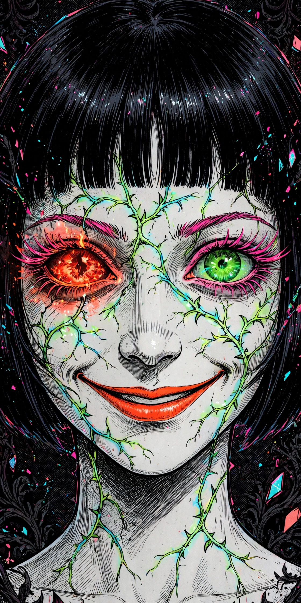
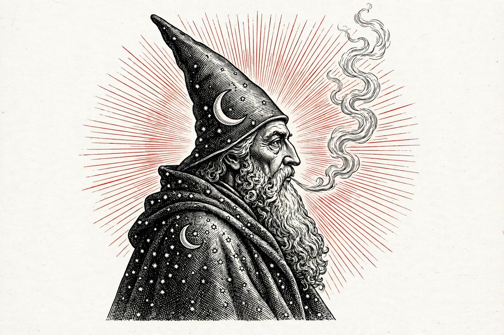
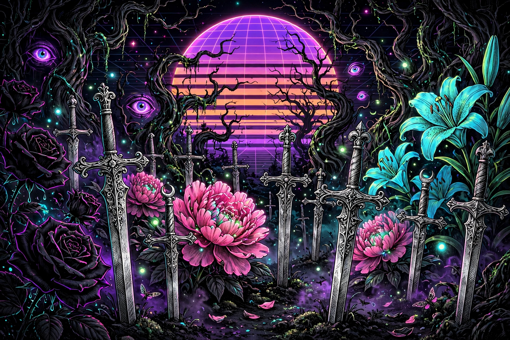

I. She Watches
The colorized face. Pink lashes, cracked-glass green vines, a smile that's a fraction too wide. Your lock screen's energy, made ours.
Oct 27 → Oct 31 · A slow transformation
An homage in spirit — Junji Ito's creeping, colorized dread braided with Micah Ulrich's hatched suns, cloaks, and blades — then drowned in vapor light. One red eye burns. One green eye watches. The garden plants its swords and waits for Halloween.
↳ Drag the hour slider below. Pick an eye. Raise the dread. This showcase is the theme, breathing.

AUTO FOLLOWS YOUR CLOCK · SLIDER OVERRIDES IT
Day is not safety here — it's exposure. Bone paper, black ink, red rays: the Ulrich plate under noon light. Night is where the neon wakes and every eye opens.
RECOLOURS THE GLOW, THE WHISPERS & THE 3D SPIRAL
Cyan — the lock-screen light. Cold, electric, impossible to ignore at 9:08 PM.
TAP A DAY TO PREVIEW ITS DREAD LEVEL — RIGHT HERE, RIGHT NOW
The full site takes this on gradually — every non-game page, day by day — until the final form lands on Halloween. Games stay untouched: too many, too intricate, and perfect as they are. Showcase: Level 1 — Ink.
ORIGINAL ART MADE FOR THIS HOMAGE — IN THE SPIRIT, NEVER A COPY
The colorized face. Pink lashes, cracked-glass green vines, a smile that's a fraction too wide. Your lock screen's energy, made ours.

The ink plate. Hatched black, bone white, and those thin red rays — the sun as a halo, the cloak as a night sky full of stars.

Where the two worlds marry: gothic blades planted like gravestones among impossible flowers, under a striped vapor sun that never quite sets.
EVERYTHING RUNS LOCALLY IN THIS ONE PAGE
A layered low hum — 55 / 110 / 165 / 220 Hz stack, built to be heard on a phone speaker, not just headphones. Tap Start and turn your volume up; check the silent switch if you hear nothing.
One song in four stages: an irregular low heartbeat first, then a low synth moves in under it, a high synth starts answering, and on Oct 30–31 every layer plays at once — the Halloween finale. Tap Start and turn your volume up.
Old-monitor grain over the whole haunting. On by default — kill it here if your eyes need mercy.
Rotating lines in the Eye panel above.
4,200 points winding forever inward — in reverse — behind this page. Pauses when the tab hides; capped for phones.